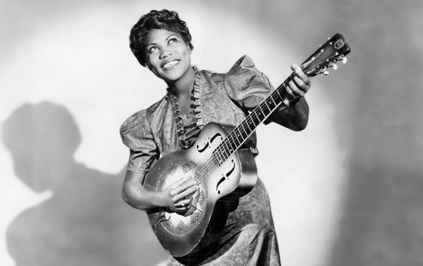

Monsters of Rock 2026 - Mercury Concerts
Lineup com Guns N' Roses, Lynyrd Skynyrd, Extreme, Halestorm, Yngwie Malmsteen, Dirty Honey e Jayler no Allianz Parque em 4 de abril.
2026 4 min
ROCK · CULTURA POP · JOGOS · CINEMA

No Dia Internacional da Mulher, celebramos Sister Rosetta Tharpe, a guitarrista pioneira que misturou gospel e riffs elétricos nos anos 1930, conhecida como "Mãe do rock'n'roll".
Por Equipe Overdrive · 8 de março de 2026 · 10 min
Tool lança "Pneuma II" — primeira inédita em 6 anos surpreende pelo silêncio
há 2h · 14k visualizações
Arctic Monkeys: o que o vazamento do novo álbum revela sobre a banda
há 4h · 9.3k visualizações
Documentário inédito sobre a última turnê do Soundgarden chega à Netflix
há 6h · 22k visualizações
Lineup com Guns N' Roses, Lynyrd Skynyrd, Extreme, Halestorm, Yngwie Malmsteen, Dirty Honey e Jayler no Allianz Parque em 4 de abril.
2026 4 min
Turnstile vence Melhor Álbum de Rock com Never Enough; indicados incluíam Deftones (Private Music), Linkin Park (From Zero) e Haim.
01/02/2026 4 min
Shinedown e outros saem após briga pública com Ludacris; festival de Kid Rock vira debate sobre política e credibilidade de bandas.
05/02/2026 5 min
Perdas incluem Johnny Legend (rockabilly, 77 anos), Kenny Morris (Siouxsie and the Banshees, 68), Fred Smith (Television/Blondie, 77, câncer).
Março 2026 5 min
Gojira lança primeiro álbum pós-Fortitude (2021) e Mastodon retorna com novo guitarrista após perda de Brent Hinds.
06/02/2026 4 min
Evanescence, Sevendust, Kerry King (Slayer), Def Leppard, Anthrax e Deep Purple preparam lançamentos no início do ano.
2026 5 min
Autódromo de InterlagosSão Paulo
Tokio Marine HallSão Paulo
Carioca ClubSão Paulo
Allianz ParqueSão Paulo
Cine JoiaSão Paulo
Mister RockBelo Horizonte
Dwayne Johnson interpreta lutador Mark Kerr em filme com trilha nu-metal dos anos 90; estreia prevista para 2026 com headbangs e MMA explosivo.
The Rock volta ao game-jungle com trilha rock alternativa; chega cinemas 25/12/2026 após estreia em novembro, misturando aventura e riffs pesados.
Novo Guitar Hero inclui riffs de Slipknot (All Hope Is Gone) e Foo Fighters; Gen Z revive nu-metal em VR para TikTok challenges.
GTA VI lança estações rádio com inéditas de Mastodon e Gojira; mods de rock virais transformam Vice City em mosh pit digital.